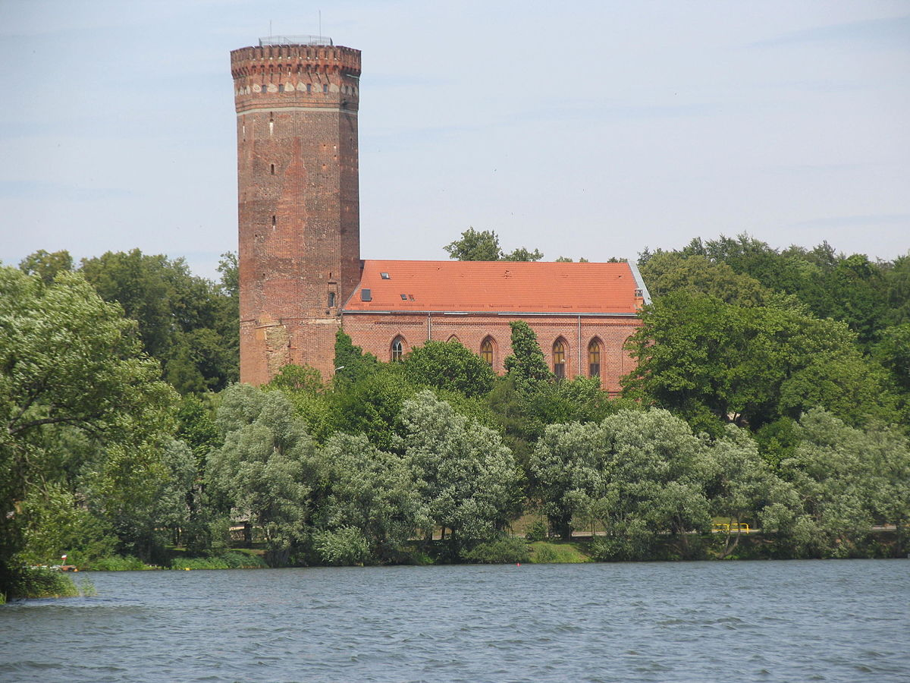
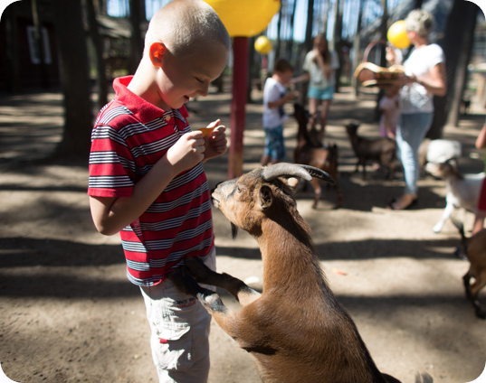
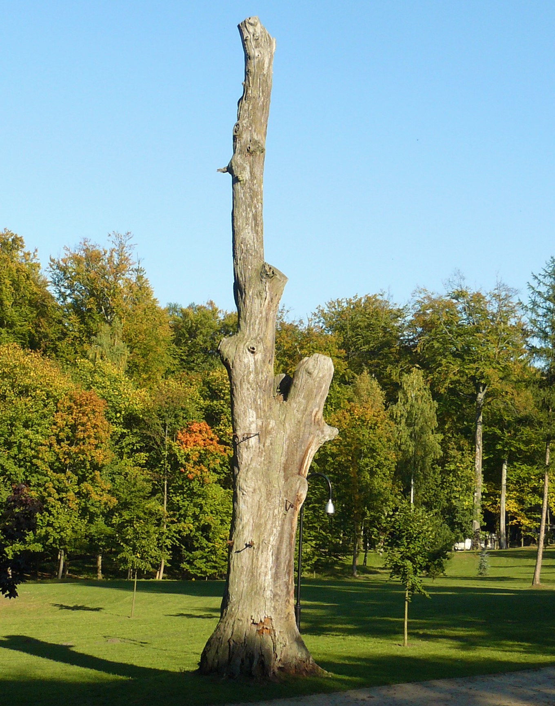

Dane o powiecie

| Siedziba | Człuchów |
| Powierzchnia | 1575 km² |
| Populacja | 56 807 |
Dane kontaktowe starostwa powiatowego
| Telefon | +48 59 834 25 95 |
| Adres | ul. Wojska Polskiego 1 77-300 Człuchów |
| Strona | starostwo.czluchow.org.pl |
Atrakcje turystyczne
Zamek w Człuchowie
Zamek krzyżacki położony w Człuchowie, drugi po Malborku pod względem wielkości zamek Zakonu. Był najtrudniejszym do zdobycia obiektem na Pomorzu, siedzibą komtura i konwentu krzyżackiego. Rezydował w nim Ulrich von Jungingen i Konrad von Wallenrode.
Źródło: wikipedia.org.JPG){kind=link}
Zoo Canpol
Bezpłatny, ogólnodostępy ogród zoologiczny zaszytym w lesie oraz w przygotowanych terenach zgodnych z naturalnym życiem zwierząt o pow. 4870 m kwadratowych.
Ogród zamieszkuje 39 gatunków zwierząt. Łącznie w naszym ZOO gości około 100 mieszkańców.
Źródło: zoo.canpol.plPark „Lasek Luizy”
Park w centrum miasta, został tak nazwany na cześć pobytu w Człuchowie Luizy, królowej Prus, żony Fryderyka Wilhelma III.
Zródło: czluchow.eu